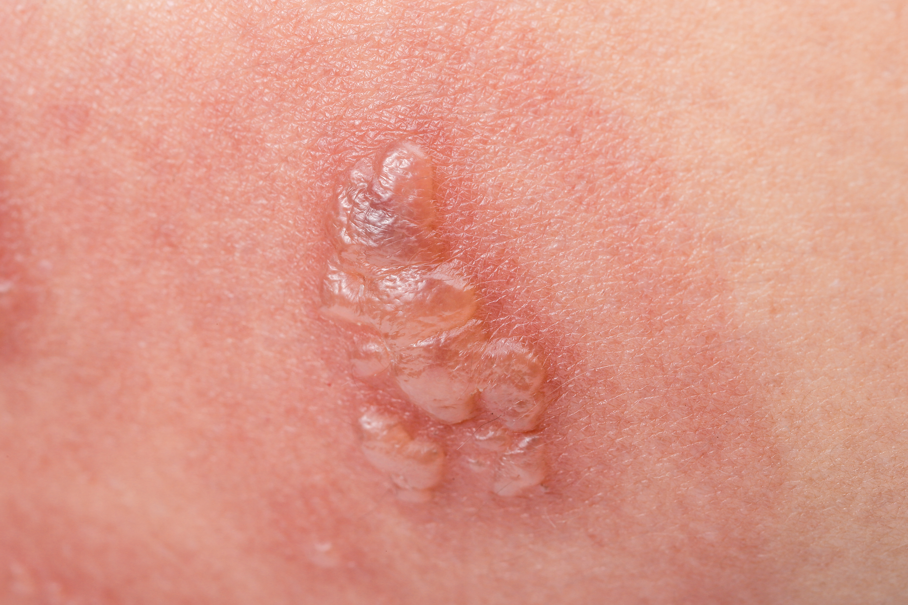
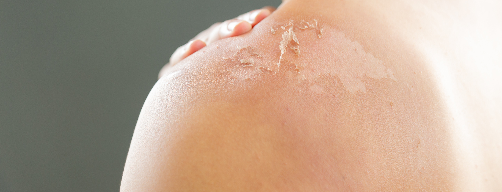
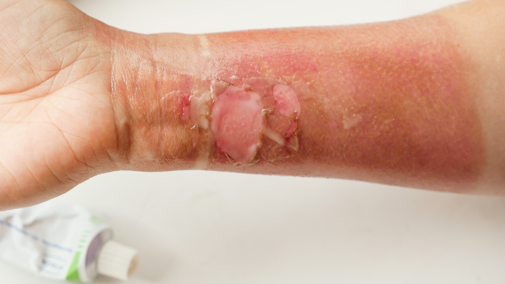
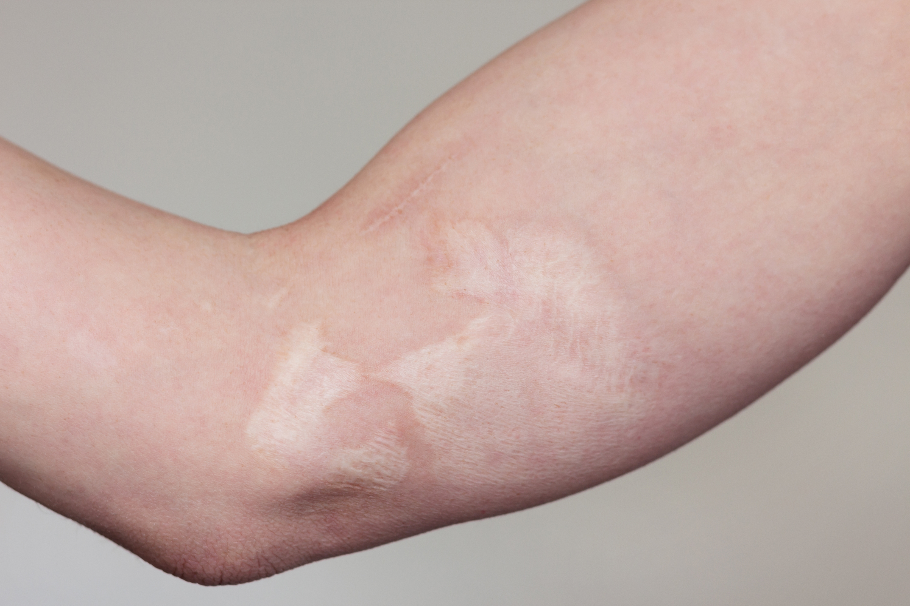
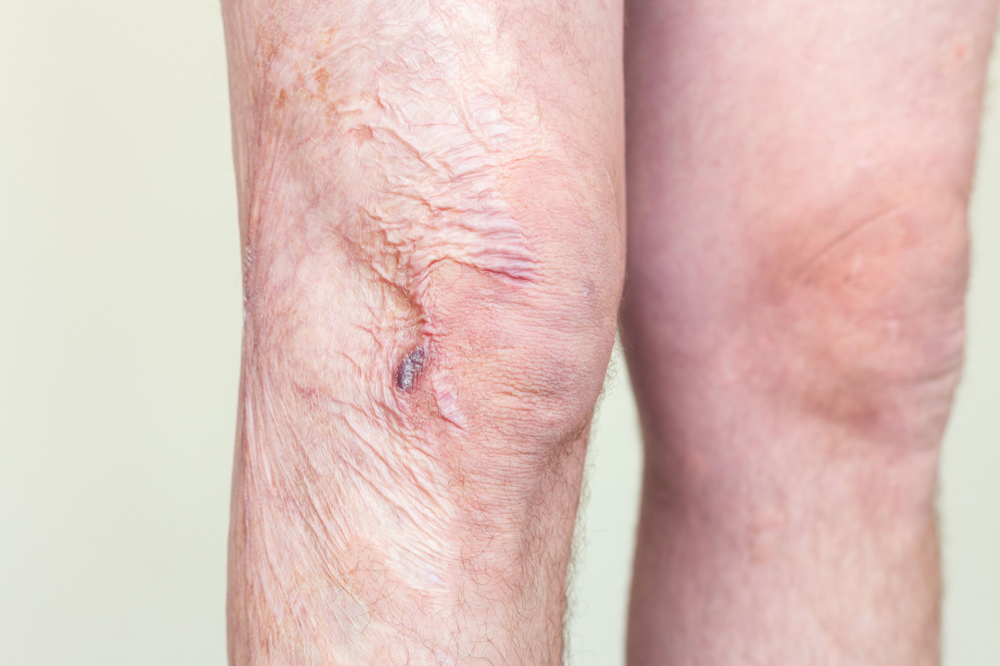
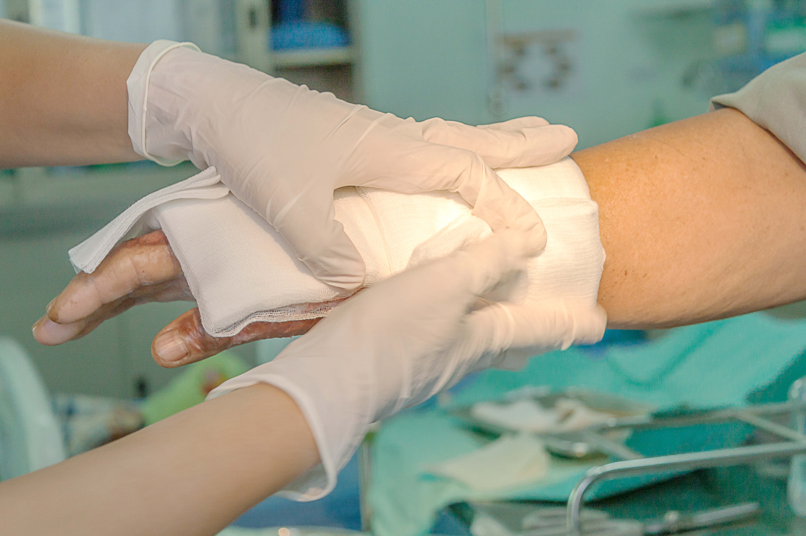
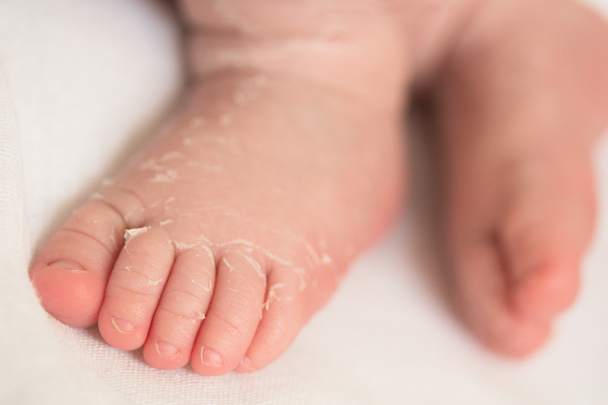

급성기 화상 치료부터 화상 후 흉터 재건, 구축 교정까지 단계별로 관리합니다.
종합병원 입원 체계로 중등도 이상의 화상에도 체계적으로 대응합니다.
화상 깊이와 범위가 치료 방향을 결정합니다. 초기 대응이 흉터를 좌우합니다.
피부 표면만 붉어지고 통증이 있습니다. 물집이 없으며 대부분 2~3일 내 회복됩니다. 응급처치 후 외래 관리가 원칙입니다.
물집이 생기고 진피층이 손상됩니다. 표재성 2도는 흉터 없이 회복 가능하지만, 심재성 2도는 식피술이 필요할 수 있습니다.
피부 전층이 괴사합니다. 반드시 수술적 처치(식피술, 피판술)가 필요하며 종합병원 입원 치료를 권장합니다.
화상 치료는 단기 치료로 끝나지 않습니다. 초기 상처 관리가 끝난 후에도 흉터 구축(당기는 흉터), 색소 침착, 기능 제한이 남을 수 있습니다. 처음부터 장기적 관리를 계획하는 것이 결과를 좌우합니다.
선메디컬센터 유성선병원 성형외과는 급성 화상 치료, 상처 드레싱 관리, 식피술, 화상 후 흉터 성형까지 동일 의료진이 연속적으로 담당합니다. 종합병원 인프라를 통해 중등도 이상 화상에서도 입원 치료가 가능합니다.

종합병원 응급실과 성형외과의 즉각 연계로 화상 발생 직후부터 전문적인 처치가 가능합니다. 초기 처치 수준이 최종 흉터를 결정합니다.
중등도 이상의 화상은 외래만으로 관리하기 어렵습니다. 입원 병동에서 지속적인 드레싱과 경과 관찰이 가능하며 소아 화상도 안전하게 관리합니다.

화상 치유 후에도 흉터 성숙 기간(약 1년)에 맞춰 압박 치료, 레이저, 흉터 수술을 단계적으로 계획합니다. 동일 의료진이 처음부터 끝까지 담당합니다.
화상 발생 직후부터 상처가 안정될 때까지의 치료입니다. 세척, 괴사 조직 제거, 상처 드레싱을 반복하며 감염을 예방하고 회복을 유도합니다.

심재성 2도 또는 3도 화상에서 스스로 피부가 재생되지 않는 경우, 신체 다른 부위의 피부를 이식합니다. 화상 상처를 빠르게 닫아 감염과 흉터를 최소화합니다.

화상 치유 후 남은 흉터, 관절 부위 구축(당기는 흉터), 피부 색소 이상을 교정합니다. 흉터 성숙(약 1년) 후 수술 시기를 결정합니다.

화상 흉터가 당겨서 관절 운동이 제한되거나 목이 당기는 경우를 교정합니다. 기능 회복이 목적이며, 필요 시 물리치료와 연계합니다.

화상 상처가 치유된 직후부터 레이저, 압박 의류, 스테로이드 주사를 사용하여 흉터가 두껍게 자라는 것을 억제합니다.

어린이는 성인보다 피부가 얇아 같은 온도에서도 더 깊이 화상을 입을 수 있습니다. 성장을 고려한 치료 계획과 보호자 중심 설명으로 안심하고 치료받을 수 있습니다.
중증 화상·응급 화상은 응급실 경유 즉시 대응 가능합니다.